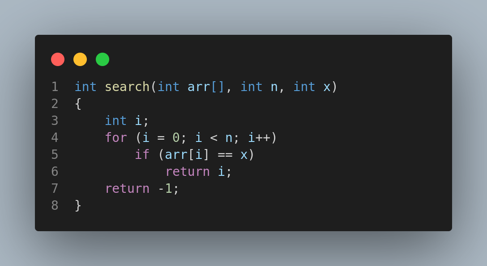
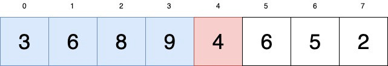
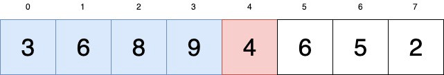

Hello Everyone!
Welcome to our Beginner's Workshop on C
Nibble Computer Society
Press
Spacebar for next slide. Esc or 'o' for overview.
Memory Visualization!
What is memory?
Complexity
What is Time Complexity?
Time complexity is simply a measure of the time it takes for a function or expression to complete its task, as well as the name of the process to measure that time.
- Big Oh denotes “fewer than or the same as” expression iterations.
- Big Omega denotes “more than or the same as” expression iterations.
- Big Theta denotes “the same as” expression iterations.
- Little Oh denotes “fewer than” expression iterations.
- Little Omega denotes “more than” expression iterations.

BrainStorming Sessions
Space Complexity
Space complexity is a measure of how efficient your code is in terms of memory used.
Standard Computer System
A 2 gigahertz processor means 2*10^9 operations cycles per second.
Searching
What is Searching?
- Searching is the process of finding a given value position in a list of values.
- It decides whether a search key is present in the data or not.
- It is the algorithmic process of finding a particular item in a collection of items.
Sequential Search
- Sequential search is also called Linear Search.
- Sequential search starts at the beginning of the list and checks every element of the list.
- It is a basic and simple search algorithm.
- Sequential search compares the element with all the other elements given in the list. If the element is matched, it returns the value index, else it returns -1.
Linear Search Function
Binary Search
- Binary Search is used for searching an element in a sorted array.
- It is a fast search algorithm with run-time complexity of O(log n).
- Binary search works on the principle of divide and conquer.
- This searching technique looks for a particular element by comparing the middle most element of the collection.
- It is useful when there are a large number of elements in an array.
Sorting
What is sorting?
Insertion sort is a sorting algorithm that places an unsorted element at its suitable place in each iteration. Insertion sort works similarly as we sort cards in our hand in a card game.
.png) 

Merge Sort
What is Merge Sort?
Merge Sort is a sorting algorithm, which is commonly used in computer science. Merge Sort is a divide and conquer algorithm. It first divides the array into equal halves and then combines them in a sorted manner.
How does it work?
- If there is only one element in the list it is already sorted, return.
- Divide the list into two halves until it can no longer be divided.
- Merge the smaller lists into a new list in sorted order.